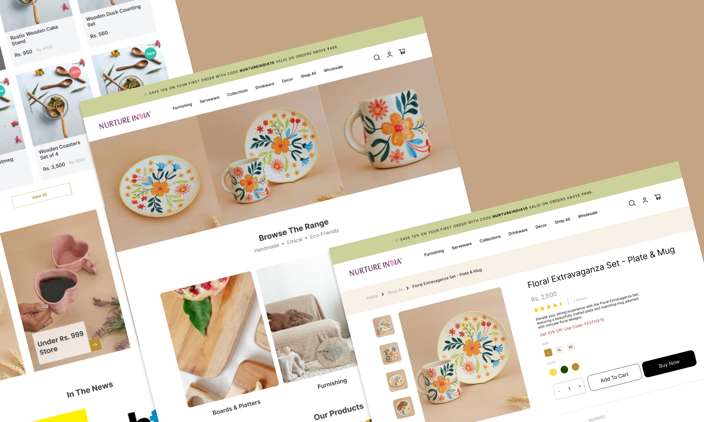
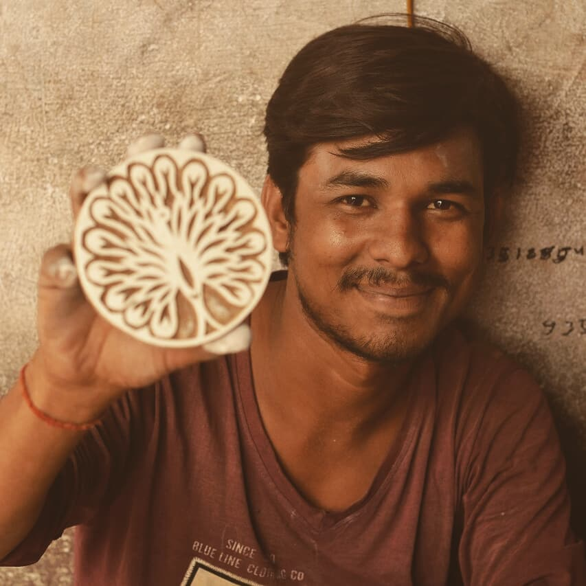

Nurture India: An E-commerce Platform Empowering Local Artisans

Bringing Traditional Artisans to a Global Market
Nurture India, founded by Somya Suresh, helps grassroots communities by promoting the work of local artisans from underrepresented backgrounds in India. The initiative works with artisans to sell their handicrafts online, sharing profits directly with the creators and helping them reach a wider audience.
I met Somya during my time at POPxo, and we became close friends. When she needed help to bring her business online, I immediately offered to assist because I believed in the mission. Together, we built a digital platform that allowed artisans to showcase and sell their work beyond their local markets, creating new opportunities and increasing their visibility.
My Contribution: Designing the Digital Shift
- I developed a custom Shopify store, optimized for user experience and product display, which helped boost sales and visibility for the artisans.Collaborated with Somya to bring Nurture India’s vision to the digital space.
- Designed and built the brand’s e-commerce website using Shopify, allowing the business to showcase and sell products online.
- This shift opened up new opportunities for artisans, expanding their reach to customers far beyond their local communities.
- I also trained a small team on how to manage and maintain the website, equipping them with the technical skills they needed to keep the business running smoothly.
Impact: Driving Sales and User Growth
Nurture India, founded by Somya Suresh, helps grassroots communities by promoting the work of local artisans from underrepresented backgrounds in India. The initiative works with artisans to sell their handicrafts online, sharing profits directly with the creators and helping them reach a wider audience.
25+
Succesful ProjectsHelped drive $1M in annual revenue by creating a seamless online shopping experience.
3x
User EngagementExpanded the customer base from 5,000 to 200,000 users across 20+ countries, achieving over 5,000 monthly online orders.
7+
Years of ExperienceExpanded the customer base from 5,000 to 200,000 users across 20+ countries, achieving over 5,000 monthly online orders.
Structuring a User-Friendly E-commerce Experience
To ensure that Nurture India's e-commerce platform was both user-friendly and scalable, I carefully designed the information architecture. This included organizing product categories, optimizing the navigation, and structuring the content to enhance the overall user experience. Below is an overview of the site’s architecture:
Prototyping the Artisans’ Online Journey
Before building the website, I created detailed prototypes in Figma to visualize the user flow and design layout. The prototypes included key pages like the homepage, product listing page and product page to ensure a smooth and intuitive experience for users.
Lessons from Building a Sustainable Digital Platform
- This project showed me firsthand how technology can make a real difference for grassroots communities. Helping Nurture India move to an online platform didn’t just boost sales; it gave artisans a way to connect with a wider audience and keep their businesses sustainable.
- It also highlighted for me how important it is to build digital solutions that small businesses can actually manage long-term. This experience strengthened my commitment to using my skills to help underserved communities.
